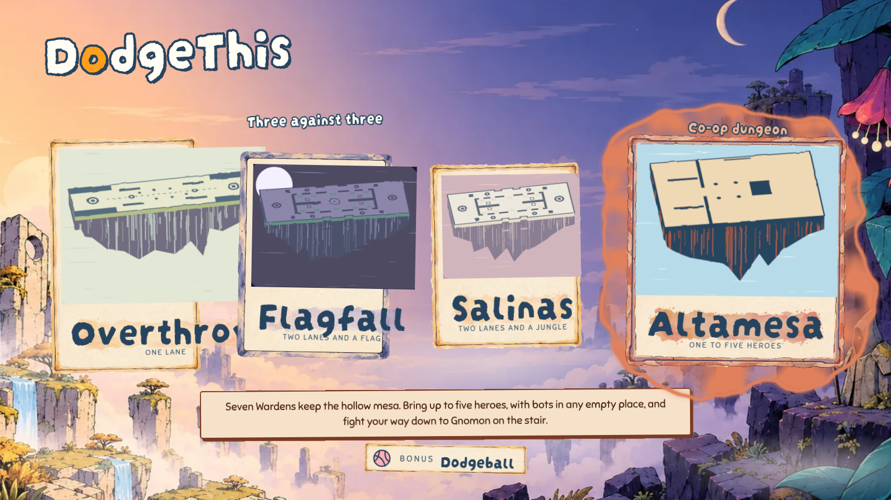
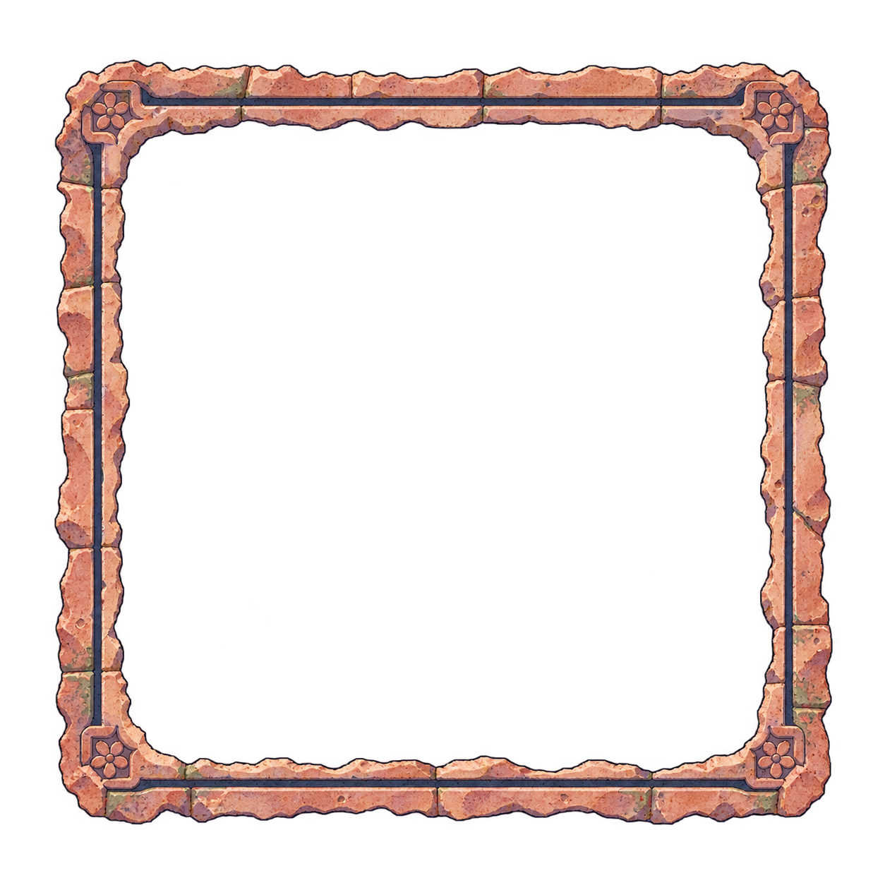
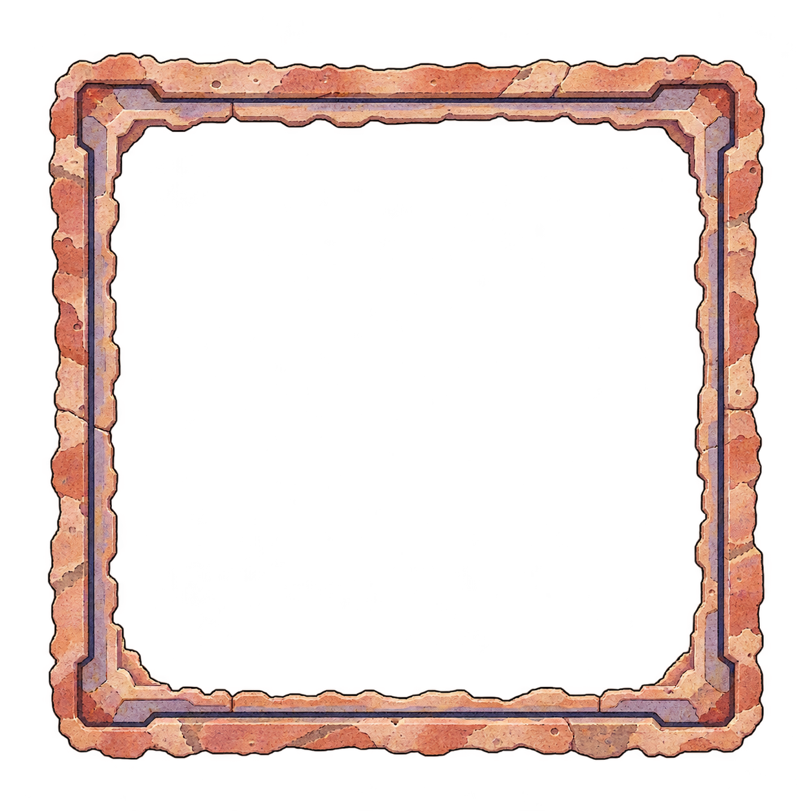

Altamesa gets its own carved frame
To review · 2026-10-31 · thr_cyrq9yw7kw
B is on the home screen: stepped sandstone with a lilac recess. A has carved rosettes in the corners. Keep B, or choose A?



/pages/art/altamesa-card-frame/notes.md · /pages/art/altamesa-card-frame/a/prompt.md · /pages/art/altamesa-card-frame/b/prompt.md